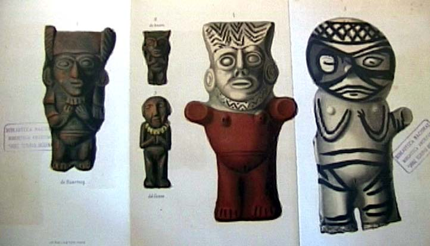

|
|  |
|
Rodolfo A. Philippi, Descripción de los ídolos peruanos del Museo de Santiago
|
In Chile, archaeological interest in the Amerindian civilisations of the Andes increased dramatically after Chilean forces during the War of the Pacific (1879-1883) raided and shipped to Santiago almost the entire collection of the Peruvian National Museum in Lima. As with the booty of the 'Desert Campaign' in Argentina, however, scientific assessment of the 'Peruvian idols' was left to a natural scientist, the National Museum's German-born director Rodolfo Philippi, who interpreted them in terms of an evolutionary scheme that implicitly confirmed the Peruvians' inferiority and backwardness due to the predominance of the 'indigenous element' in their population.
|